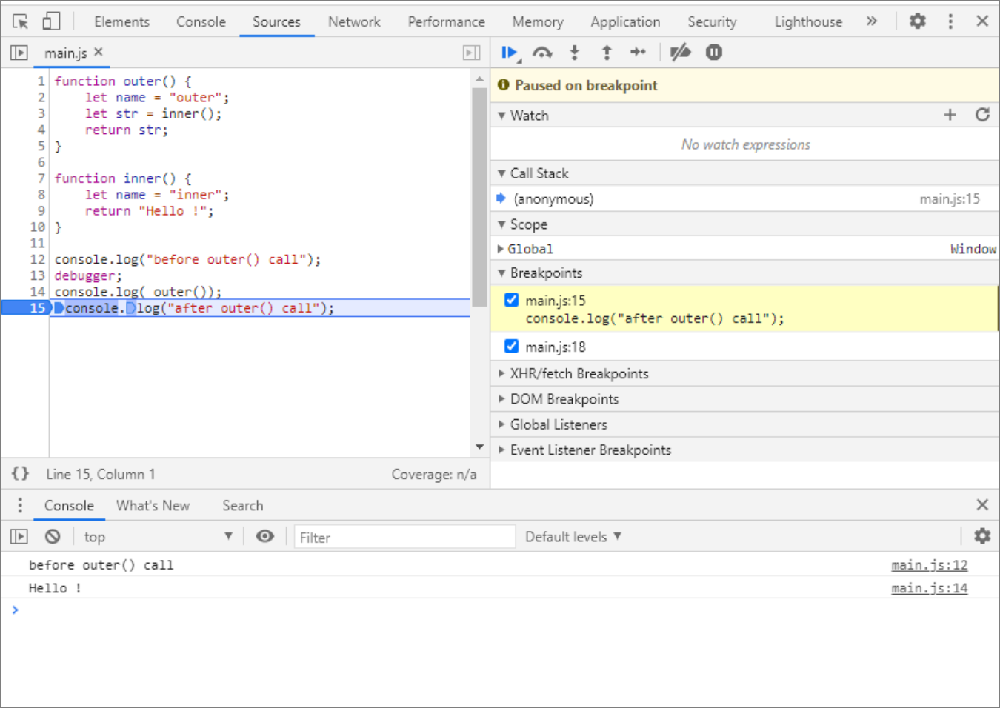
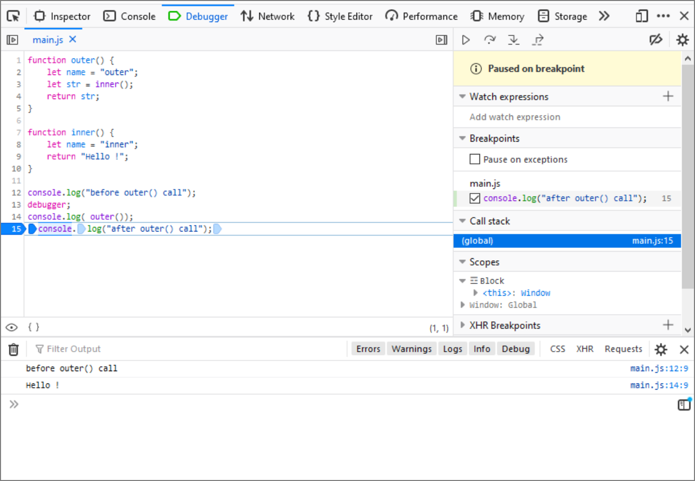

To the right of the tab, locate the Resume button (the triangle icon rotated to the right – play). If you hover your mouse over this button, a tooltip should appear so that you can make sure it's the right button. Press this button, or use the keyboard shortcut F8. As a result, the program will move on, and without stopping any more, it will execute to the end by itself. The console should now show the complete information generated by the program:
OUTPUT
before outer() call
Hello !
after outer() call
Using Resume does not necessarily cause the program to execute to completion. We can indicate where it should stop again. Reload the page again. Notice that the debugger displays line numbers to the left of the code. Click on the number 15, indicating the last line in our code. This is how we set the breakpoint (the line will be highlighted). Click on the line number again if you want to remove the breakpoint (do not delete it yet). If we now click on the Resume button (or use F8) the program will move on and will stop at the breakpoint. As a result, the console will display the following text:
OUTPUT
before outer() call
Hello !
Chrome:

Firefox:

Only by clicking Resume again will the program execute to completion, and the console will show:
OUTPUT
before outer() call
Hello !
after outer() call
To be honest, when debugging code, we rarely use the debugger statement. Most often, at the place where the program should stop, we just indicate it using breakpoints set directly in the Developer Tools. Before further work, remove the breakpoints (by clicking on the appropriate line numbers).